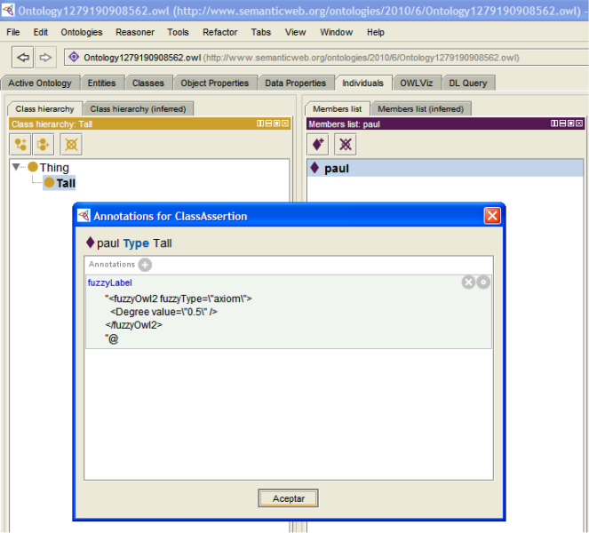
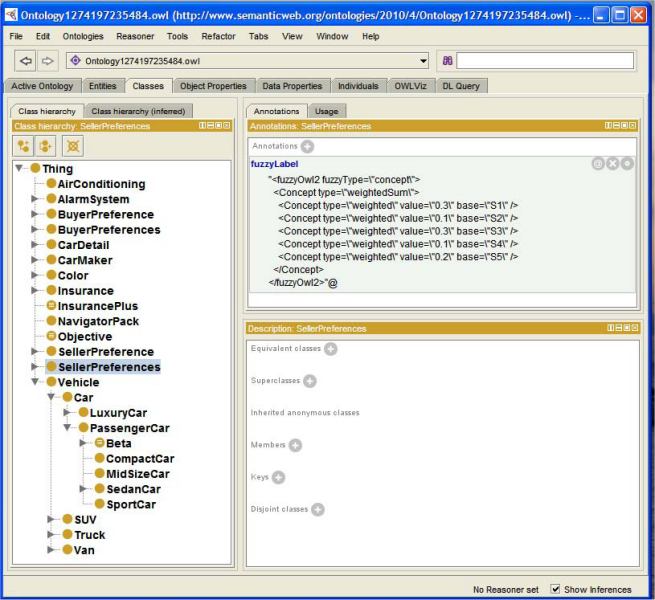

Fuzzy OWL 2 is a joint project with Fernando Bobillo
The need to deal with vague information in Semantic Web languages is rising in importance and, thus, calls for a standard way to represent such information. We propose to use the language OWL 2 itself (the current standard ontology language) to represent fuzzy ontologies. More precisely, we use OWL 2 annotation properties to encode fuzzy ontologies. The use of annotation properties makes possible to use current OWL 2 editors (e.g., Protégé) for fuzzy ontology representation.
We also provide a Fuzzy OWL 2 Protégé plug-in.
A full description of the syntax of the fuzzy ontologies, and of the methodology to represent them, is described in a technical report available at the Documentation section.
Let us consider an example. Consider the fuzzy concept assertion paul : Tall >= 0.5, which states that Paul can be considered tall with at least degree 0.5. To represent it in OWL 2, we consider the concept assertion paul : Tall as represented in OWL 2: ClassAssertion(paul Tall). Then, we add an annotation property including the information >=0.5 to it, as shown in the following picture.

In this section, we will provide some examples illustrating how to encode the fuzzy ontologies using our approach. Some fuzzy ontologies are explained in a technical report available at the Documentation section.
Screenshot of the fuzzy ontology for matchmaking:

The plug-in supports you in creating Fuzzy OWL 2 ontologies, without bothering about how to write the annotations.
The plug-in allows you also to submit queries to the fuzzyDL reasoner.
A screenshot
Once the fuzzy ontology has been created with a conventional ontology editor, it has to be translated into the language supported by some fuzzy ontology reasoner, so that we reason with it. For this purpose, we have developed a template code for a parser translating from OWL 2 with annotations representing fuzzy information into the language supported by some reasoner (class ). This general parser can be adapted to any particular fuzzy DL reasoner. As illustrative purposes, we have adapted it to the languages supported by two fuzzy DL reasoners: fuzzyDL and DeLorean. It is important to point out that similar parsers for other fuzzy DL reasoners can be obtained without difficulties.